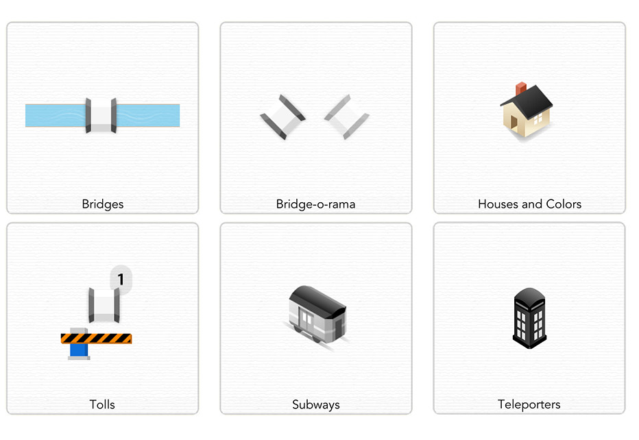

Seven Bridges of Königsberg
Visit a town full of islands with bridges connecting them. Cross every bridge to win, but you can only cross them once.
Each town is a fun puzzle with new challenges. Cities build on each other with colors, houses, tolls, and subways.
It starts off easy

It doesn't stay that way

The more you play the more you'll see patterns in Seven Bridges. Here's a cool tip to help you figure out where to start and end each level.
Having trouble solving a tough level? Use the new hint button to get started.
Seven Bridges combines simple ideas to create complex levels. Check out a favorite from the end of the game.
Seven Bridges gives you five cities with 80 towns in all

And it's all open source